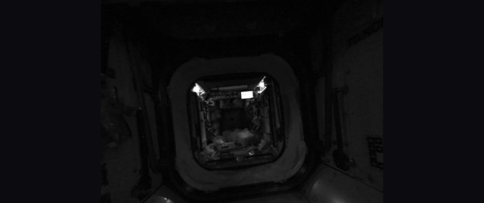
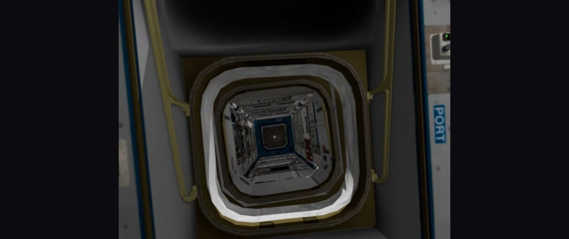
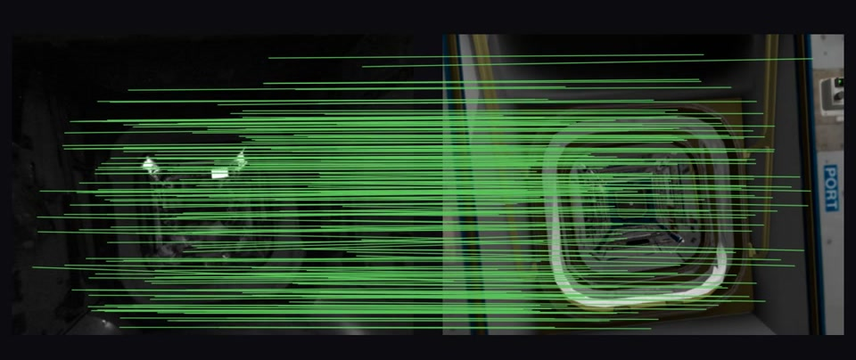
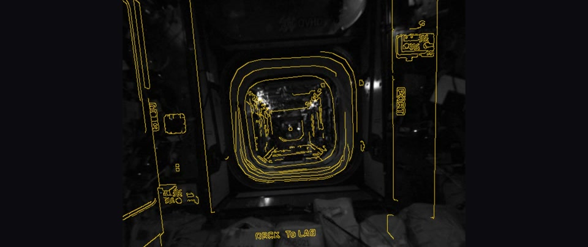
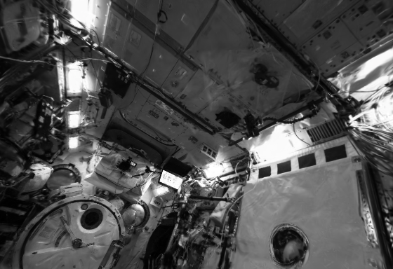

Reconnect the real 3D reconstruction.Interactive · drag to orbit
Method
Real image to metric constraint.
Match the observation to a posed twin render; accept only verified geometry.

01 · Real query
02 · Twin render
03 · Dense match
04 · Verified poseEvidenceCausal PRE (f0) and POST (f200) anchors; no future fit. Automatic trigger and resume remain future work.
Map quality
Higher fidelity in 138 of 148 views.
Compared with clean-sequence HI-SLAM2 at the same timestamps.
+1.96 dBMean PSNR
−22%Mean LPIPS
138 / 148Higher PSNR

KIBO f205 · orange box highlights hatch edges and fine structure · own-pose training-view diagnostic
Connected map
Two runs. One metric gauge.
Independent PRE and POST maps in the CAD frame; blackout frames omitted.
Interactive 3D
Inspect the final map.
Drag to orbit. Pinch or scroll to zoom.
23,180PRE splats
87,993POST splats
Quantitative protocols, baselines, and limitations
See all evidence